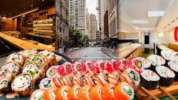

Diana Harris
I am a Brigham Young University student majoring in Accounting. I am currently seeking an internship for the summer of 2024. I have experienced in teachings languages such as Indonesian, French, Spanish, and English at the Provo Missionary Training Center. I have lived in Arizona, Utah, and Canada. I spent a year and a half in Indonesia as a missionary for the Church of Jesus Christ of Latter-day Saints, where I developed a love for Asian cuisine and business. Overall, I am a hard worker, willing to learn new things, a team player, able to work well with others, and I love sushi!
Special Hobby

Why Sushi Matters to Me
Sushi is one of my favorite hobbies because it combines culture, creativity, and health. Learning more about its history and benefits has made it even more interesting to me.

The Origins of Sushi
Though often associated exclusively with Japan, sushi's roots are actually found elsewhere in Asia as a clever method of food preservation.
- Southeast Asian Roots: The earliest ancestor of sushi, known as nare-zushi, likely originated along the Mekong River in Southeast Asia or southern China.
- A Preservation Method: It began as a way to keep fish from spoiling. People packed salted fish in fermented rice; the acidity from the fermenting rice preserved the fish, though the rice itself was originally discarded.
- Arrival in Japan: This practice reached Japan around the 8th century. Over time, the Japanese began eating the rice along with the fish while it was still partially fermented.
- The Birth of Nigiri: In the 1820s, a chef named Hanaya Yohei in Edo, modern-day Tokyo, created nigiri-zushi. By using vinegar-seasoned rice and fresh fish, he removed the need for months of fermentation and turned sushi into the fast food of its day.
My Sushi Favorites
- Favorite sushi qualities
- Fresh ingredients
- Balanced flavor
- Creative presentation
- Favorite parts of the experience
- Trying new rolls
- Learning the history
- Making sushi with other people
The Health Benefits of Sushi
Sushi is widely regarded as one of the healthiest dining options because of its nutrient-dense ingredients.
- Heart and Brain Health: Fatty fish like salmon, tuna, and mackerel are rich in Omega-3 fatty acids, which support cognitive function and help reduce the risk of heart disease.
- High-Quality Protein: Fish provides a lean source of protein that is essential for muscle repair, metabolism, and maintaining energy levels.
- Mineral-Rich Seaweed: The nori used in rolls is a great source of iodine for thyroid health, as well as vitamins A, C, and iron.
- Natural Defenses: Traditional accompaniments like ginger and wasabi have antibacterial and anti-inflammatory properties that help boost the immune system.
- Essential Minerals: Sushi contains trace minerals including zinc, magnesium, and calcium, which are important for bone health and proper body function.
Why Making Sushi is Fun
Preparing sushi at home is an engaging activity that offers more than just a meal. It becomes an interactive experience.
- Creative Freedom: You become the sushi chef and can experiment with non-traditional ingredients like mango, sweet potato, or spicy sauces to create your own signature rolls.
- Mindfulness and Precision: Spreading rice evenly and rolling the mat takes focus and patience, which can make the process feel calming and meditative.
- Social Interaction: Sushi-making is a perfect activity for parties or dates because everyone can participate, share techniques, and enjoy the edible art they created together.
- Sense of Accomplishment: There is real satisfaction in mastering the roll. Even when the first few attempts are messy, getting better is highly rewarding.
- A Tactile Experience: In a world full of screens, making sushi is a hands-on skill that encourages you to unplug and work directly with fresh, colorful ingredients.
Tableau Sushi